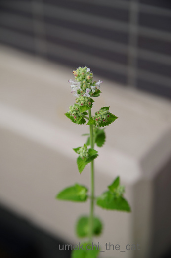
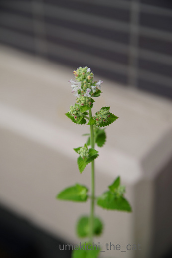

テーブルの上の攻防 [梅吉]
PCに向かっているとほぼ絡んで来る梅吉さん。
![[猫]](https://blog.ss-blog.jp/_images_e/101.gif) ちらっ・・・
ちらっ・・・

キーボードから手を離してかまってあげようとすると
喜んじゃってくりんくりんし始めます。
テーブルの上がぐちゃぐちゃですよー。
ちらキバですよー。
「わきー！」が全開ですよー。

さらに喜んじゃうとキーボードの上に乗って来ます。
それだけはや〜め〜て〜(꒦ິ⌑꒦ີ)
梅吉が侵入しようとしているあたりにMacのスタートボタンと
deleteキーがあります・・・
これらを押されて何度書きかけのブログ＆皆様へのお返事を消去されたことか！
「や〜め〜て〜よ〜〜〜」なんて押し合っているうちに
マグカップの飲み物をぶちまけちゃうのもよくあることです。
でも絡んで来てくれないのもちょっと寂しい・・・
そうこうしているうちに梅吉さん寝ちゃいました。
ツッコミどころしかない寝姿です。
日本の夏、白目の夏。
 ↑ガブッと一押し↑
↑ガブッと一押し↑
先日買ったキャットニップは花を咲かせてみました。

可愛らしいお花です。
梅吉に嗅がせてみましたがやっぱり興味なし・・・
水盤の睡蓮も咲きました。
朝開いて夕方閉じて・・・２日間しか咲いていません。
今年はいくつ咲いてくれるかなぁ。

キーボードから手を離してかまってあげようとすると
喜んじゃってくりんくりんし始めます。
テーブルの上がぐちゃぐちゃですよー。
ちらキバですよー。
「わきー！」が全開ですよー。

さらに喜んじゃうとキーボードの上に乗って来ます。
それだけはや〜め〜て〜(꒦ິ⌑꒦ີ)
梅吉が侵入しようとしているあたりにMacのスタートボタンと
deleteキーがあります・・・
これらを押されて何度書きかけのブログ＆皆様へのお返事を消去されたことか！
「や〜め〜て〜よ〜〜〜」なんて押し合っているうちに
マグカップの飲み物をぶちまけちゃうのもよくあることです。
でも絡んで来てくれないのもちょっと寂しい・・・
そうこうしているうちに梅吉さん寝ちゃいました。
ツッコミどころしかない寝姿です。
日本の夏、白目の夏。
先日買ったキャットニップは花を咲かせてみました。

可愛らしいお花です。
梅吉に嗅がせてみましたがやっぱり興味なし・・・
水盤の睡蓮も咲きました。
朝開いて夕方閉じて・・・２日間しか咲いていません。
今年はいくつ咲いてくれるかなぁ。

カフェオレ色の梅吉

梅吉 2023年8月10日 永眠


梅吉と出会った譲渡会

犬猫の理由なき殺処分ゼロ
妄想広告
UMEKICHI 光

爆発的に早い！
時々攻撃的！
Thanks to Mr.Boss365
爆発的に早い！
時々攻撃的！
Thanks to Mr.Boss365

梅吉君、まったくあおと同じだから笑っちゃったよ(笑)
そうそう、Mac のスタートボタンと deldete キーがあるんですよね。
わたしも何度押されたことか^^;
あとは、ディスプレイの上部からまたぐようにしてキーボードに乗ろうとしますよｗ
「やーめーてー」と言いつつ、絡んでこられないと寂しいんですよねｗｗ
by リュカ (2017-06-20 16:57)
リュカさん＞あはは＾＾あおくんと同じなんだ〜。
関心ないふりしながらみょ〜んって
ディスプレイの向こうに登場して来るよねww
またぐように来るのはMacがひっくりがえったりしそうだ^^;
関心ないふりしながら構って欲しい
ちとめんどーだけどこないと寂しい・・
にゃんこも飼い主もどっちもどっちだね(≧艸≦)
by ちぃ (2017-06-20 17:39)
ちらキバに白目! 今日はサービス満点ですねー。
私はデスクトップタイプなのでキーボードはカバーでガード。変なメールを沢山書かれちゃったんですぅ。梅吉さんは消しちゃうんだ。
みんなが集まったらまたお祭りに来てね梅吉さん!
by zombiekong (2017-06-20 17:57)
zombiekongさん＞ちらキバ、白目、暑気払いにいかがですか？＾＾
あ〜！！へんなメッセージ打たれたこともあります。
おっとはそれをfacebookに投稿してましたわww
梅吉、やきいかやさんをにいかなあかん！と出かけて行ったんですけど〜(･◇･)
by ちぃ (2017-06-20 18:17)
自分以外に夢中なのが寂しく感じちゃうのかな？？
とっても可愛い梅吉さん♪
今はちょっとと思ってもついつい
構いたくなる魅力をお持ちですね(#^.^#)
by きぃ (2017-06-20 19:43)
日本の夏、白目の夏。←笑った～～～(^.^)
邪魔されるのも困るけど寄ってこないのも寂しい。分かる分かる!!
by palpal (2017-06-20 19:51)
日本の夏、白目の夏♪
ドド～ンと花火を打ち上げたくなりますね(*^▽^*)
ちぃさんが自分以外のものに注目して楽しそうにしているのが嫌なんですよね！やきもち梅吉さん、可愛すぎます^^
ウチのはコーヒーをいれに席を立った時にス～ッとキーボードに乗り、戻った時には見たこともない画面が開いています^^;
by ゆきち (2017-06-20 20:45)
あはは、パソコンに絡んでくるのは困りますね！
遊びちらした後で、魂は宇宙へ‥？！
最高ですね～＾＾
うちのは大人になってからはなかったけど～若い頃パソコンの前に来られたときは抱っこするしかなかったですね＾＾；
by sana (2017-06-20 21:08)
ネコ飼い様専用のキーボード・ミニガラス・
カバーがあったら売れるだろうなあ。
・・・上に乗っちゃうからダメか。^^;
by yes_hama (2017-06-20 21:29)
こういう何気ないしぐさがツボですね。さすがに記事作成中は邪魔しないでほしいけどね（笑）
by みぃにゃん (2017-06-20 22:09)
「わきー！」ホント全開（笑）
指と指でコンタクトをとって仲が良いですね。
by kiki (2017-06-20 22:48)
寝顔が最強に可愛いですｗｗ
白目向いて個性的ですねぇヾ(*´∀｀*)ﾉ
by sumi-cyan (2017-06-21 06:40)
ホントに可愛い子だわ～
梅吉さん大好きです♡
どんなに悪戯されても、寝顔みたら許せちゃうｗ
by muku (2017-06-21 11:04)
猫さんたちにとっては、PCより自分なのでしょうね。
私も今まさに、タラオと攻防中ｗ
コメントは消すは、ページは替えるは。
ファイルの名前をめちゃくちゃに書き換えたりゴミ箱に捨てたりｗ
Fキーも使いこなしてるにゃ。byタラ・・・(^^;
でも、怒れないよね。こんな白目を見せられたら・・・。
日本の夏だよね。
by emi (2017-06-21 17:13)
うちのかみさんもノエルと攻防戦を繰り返してますよぉ(⌒-⌒; )
ノエルはかみさんの顔を舐めたりスリスリしたくて、かみさんはスリスリは
良いけどあまり舐められると痛くなるので遠慮したくて・・・
そして「あぁ・・・ノエちゃん、また」というかみさんの悲鳴が
隣からほぼ毎日聞こえてきますw
エェ、隣でPCでブログやってる私には一切絡んできません(ｰ ｰ;)
白目寝、夏にぴったりですね(⌒-⌒; )
by ニッキー (2017-06-21 22:06)
ニャンコも白目で寝るんだね～♪
笑った！笑った！
by yuppie (2017-06-22 02:26)
先生、楽しそう！！＾＾
ガブッと！
by KENT0mg (2017-06-22 13:15)
きぃさん＞ねー！自分が眠い時はどんなに呼んでもガン無視するのにー！！
あまり来て欲しくない時にはガンガン来る。
さびしんぼうで甘えん坊で本当に・・・可愛い子です(〃▽〃)
palpalさん＞真夏の白目、日本の古き良き正しい夏でしょ（←そうなのか？
梅吉が邪魔してこない時は
たまにヒモでおびき寄せたりしちゃいます (^▽^;)
ゆきちさん＞おお！あの日本の夏を感じるCMをご存知ですね(^_－)☆
コーヒー淹れ、トイレタイムでPC前から離れる時は要注意ですよね！
一度読み上げ機能を起動されて大変困った事があります。
あんなシステム環境設定まで入り込まなきゃいけない機能を
どうやって立ち上げたのか・・・
それ以来、肉球の魔術師とかMacジーニアスと呼ばれている梅吉です。
sanaさん＞どのにゃんこもパソコンに絡んで、もとい、
パソコンに向かっている飼い主に絡んでくるのですね〜。
抱っこで除けることもありますが、抱き上げようとする瞬間に
どこかのキーを肉球でぎゅ〜〜〜〜っと・・・
みたこともない画面が立ち上がっている事が多々あります(꒦ິ⌑꒦ີ)
yes_hamaさん＞PC専用猫避けガード！！
・・・確かに上に乗ったり開発者の方や飼い主が思いもよらない方法で
ガードを無力化してしまいそうですね、猫様は (^▽^;)
みぃにゃんさん＞ちょいちょい邪魔してくる様子はかわいくて
微笑ましいのですが・・・作成途中記事全消去は泣きます〜。
が、だったらにゃんこが来ない様にしよう、ではなく
消去されてもダメージが少ない様に書きかけ記事は
こまめに保存しよう！と考える前向きな猫飼いですよ〜(๑˃̵ᴗ˂̵)و
kikiさん＞ふふふ、どこか一箇所でも触れ合っていると
うれしい梅吉とおかーさんです(〃▽〃)
sumi-cyanさん＞白目の寝顔は梅吉最強の武器だと思っていますよ(^_－)☆
by ちぃ (2017-06-22 16:05)
mukuさん＞かまってちゃんすぎて「あんさんは犬かい？」って思う事が^^;
寝顔もいたずら顔も、ついでにがぶがぶ顔ですら
我が家では「天使！」と言われております(^o^)
emiさん＞なんとー！Fキーも使いこなすのですか！！
梅吉も肉球一つで「読み上げ機能」を立ち上げたりするので
肉球の魔術師とかMacジーニアスと呼ばれているのですが
タラオさんも魔術師ですねぇ(^_－)☆
蒸し暑い日本の夏、
梅吉の白目で一瞬涼やかな風が吹いたでしょうか(≧艸≦)
ニッキーさん＞ゴッドマザー様のお気持ちお察しいたします。
ニャンコの舌のザリザリは痛くってぇ・・・あ、すみません
自慢している様に聞こえちゃったでしょうか(*>艸<)
「ノエちゃーん、
ニッキーさんなら痛くても我慢してくれるから舐めてあげてー」(｣ﾟﾛﾟ)｣
yuppieさん＞白目、得意なんですよ(≧艸≦)夏は白眼の季節〜♪
KENT0mgさん＞梅吉はいつも楽しそうなんですよ〜。
そういてくれる様に飼い主は心を砕いておりまする＾＾
by ちぃ (2017-06-22 17:29)